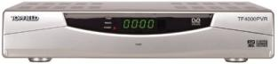
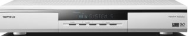
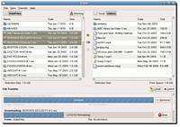

Topfield
Archivierte Anleitung
Dieser Artikel wurde archiviert, da er - oder Teile daraus - nur noch unter einer älteren Ubuntu-Version nutzbar ist. Diese Anleitung wird vom Wiki-Team weder auf Richtigkeit überprüft noch anderweitig gepflegt. Zusätzlich wurde der Artikel für weitere Änderungen gesperrt.
Dieser Artikel wurde für die folgenden Ubuntu-Versionen getestet:
Dieser Artikel ist mit keiner aktuell unterstützten Ubuntu-Version getestet! Bitte diesen Artikel testen und das getestet-Tag entsprechend anpassen.
Zum Verständnis dieses Artikels sind folgende Seiten hilfreich:
In diesem Artikel wird beschrieben, wie man Zugriff auf die Festplatte des Topfield  4000/5000 DVB-S Satelliten-Receivers erlangt, Dateien kopieren oder löschen kann. Die aufgezeichneten Sendungen liegen als MPEG-2 Transportstrom vor und können auf den Rechner kopiert werden, um unter Zuhilfenahme eines Video-Schnittprogramms wie DVBcut oder ProjectX und eines DVD-Autorenprogramms wie z.B. DeVeDe in eine Video-DVD konvertiert zu werden. Die Topfield-Festplatte wird entweder an die interne IDE-Schnittstelle oder mit Hilfe eines IDE-Wechselrahmens an die USB- oder Firewire-Schnittstelle angeschlossen. Dieser Artikel beschreibt allerdings nur den Anschluss per USB.
4000/5000 DVB-S Satelliten-Receivers erlangt, Dateien kopieren oder löschen kann. Die aufgezeichneten Sendungen liegen als MPEG-2 Transportstrom vor und können auf den Rechner kopiert werden, um unter Zuhilfenahme eines Video-Schnittprogramms wie DVBcut oder ProjectX und eines DVD-Autorenprogramms wie z.B. DeVeDe in eine Video-DVD konvertiert zu werden. Die Topfield-Festplatte wird entweder an die interne IDE-Schnittstelle oder mit Hilfe eines IDE-Wechselrahmens an die USB- oder Firewire-Schnittstelle angeschlossen. Dieser Artikel beschreibt allerdings nur den Anschluss per USB.
Der unten beschriebene Tffs-Treiber ist nur mit einem Topfield 4000-Receiver getestet worden. Da aber der Quellcode der Software verfügbar ist, kann man diesen verändern, um die Lese-Funktion auf weitere Topfield-Modelle zu erweitern. Der Autor will diese Patches dann in zukünftige Versionen von tffs einbinden.
Topfield 4000 PVR¶
 Es gibt im Moment zwei Möglichkeiten, Zugriff auf eine Topfield 4000 Festplatte zu erlangen. Die erste Möglichkeit ist die Festplatte in einen Dateimanager wie z.B. Nautilus einzubinden. Dazu installiert man den tffs-Treiber  . Man kann entweder das vom Autor bereitgestellte deb-Paket installieren oder kompiliert den Treiber manuell aus dem Quellcode.
. Man kann entweder das vom Autor bereitgestellte deb-Paket installieren oder kompiliert den Treiber manuell aus dem Quellcode.
Die zweite Möglichkeit ist das Kommandozeilenwerkzeug tfdisk . Mit diesem Programm kann man in einem Terminal den Inhalt der Topfield-Festplatte anzeigen, löschen oder darauf schreiben.
TFFS-Treiber¶
tffs ist ein Linux-Treiber für das Topfield-eigene Dateisystem Fat24, der auf FUSE basiert. Damit kann mit einem Dateimanager wie z.B. Nautilus auf die Topfield-Festplatte zugegriffen werden. Der Treiber erlaubt aber keine Schreibvorgänge, was auch das Löschen oder Umbenennen von Dateien verhindert. Dabei muss allerdings beachtet werden, dass die Filmbezeichnungen keine Sonderzeichen und Umlaute enthalten dürfen. Dies kann dazu führen, dass die Filme nicht auf die Rechner-Festplatte kopiert werden oder dass einige Programme wie DVBcut die Filme nicht öffnen können. Allerdings ist auf dieser Webseite eine inoffizielle Version verfügbar, die Sonderzeichen und Umlaute in der Bezeichnung der Video-Dateien ersetzt. Diese Version muss manuell installiert werden.
Automatische Installation¶
Man lädt von der Entwicklerseite die jeweils aktuellste Version als .deb-Datei herunter und installiert diese wie gewohnt [6].
Linkto-Suche: Fremdquellen
Dabei werden automatisch alle Abhängigkeiten wie z.B. libfuse2 mit installiert.
Manuelle Installation¶
Falls das Programm aus dem Quellcode kompiliert [5] werden soll, werden die folgenden Pakete zur Vorbereitung installiert [1].
libfuse-dev
libboost-dev
scons
fuse-utils
Paketliste zum Kopieren:
sudo apt-get install libfuse-dev libboost-dev scons fuse-utils
sudo aptitude install libfuse-dev libboost-dev scons fuse-utils
Nun wird der Quellcode heruntergeladen. Dazu wird die tar.bz2-Datei (Source) ausgewählt und anschließend im Home-Verzeichnis entpackt [4]. Danach wird ein Terminal [3] geöffnet, in das Verzeichnis tffs-* gewechselt und dann der Befehl
sudo scons
aufgerufen. Sofern keine Fehlermeldung ausgegeben und der Vorgang erfolgreich abgeschlossen wird, befindet sich nun die kompilierte Datei mount.tffs im Unterverzeichnis bin. Die Binärdatei lässt sich mittels
sudo scons install
installieren. Um ein .deb-Paket zu erstellen wird der Befehl
sudo checkinstall scons install
ausgeführt und das Paket über die Paketverwaltung installiert [1].
Festplatte einbinden¶
Als erster Schritt muss das Verzeichnis angelegt werden, in dem die Topfield-Festplatte eingebunden wird. Dazu in einem Terminal [3] diesen Befehl eingeben:
sudo mkdir /media/topf
Das Verzeichnis /media/topf kann man natürlich auch anders nennen. Nun wird die Topfield 4000-Festplatte mit dem folgendem Befehl eingebunden:
sudo mount.tffs /dev/sdb /media/topf -o allow_other
/dev/sdb ist hierbei die Adresse der Festplatte und kann je nach Anschluss variieren. Falls man nicht weiß, welche Adresse der Topfield-Festplatte zugewiesen wurde, hilft der Artikel zu Datenträgern weiter.
TFDisk¶
tfdisk ist das klassische Kommandozeilenwerkzeug, um die Festplatte des Topfield Sat-Receivers TF4000 PVR auszulesen, Dateien zu löschen und darauf zu schreiben. Dies ist allerdings nur in einem Terminal möglich, d.h. der Inhalt der Festplatte wird im Gegensatz zum tffs-Treiber (siehe oben) nicht in einem Dateimanager angezeigt. Die Entwicklung scheint im Moment eingestellt zu sein, daher ist es mit dem originalen Quellcode nicht möglich, den Inhalt der TF-Festplatte auszulesen, wenn diese per USB/IDE-Adapter an den Rechner angeschlossen wird.
Eine neue und verbesserte Version ist auf dieser Webseite verfügbar. Im Gegensatz zum Original-Quellcode sind die Linuxbinaries (gcc 4.1.0-25, glibc 2.4-31.1) enthalten und ein Problem mit neueren Compilern behoben. Außerdem werden zusätzlich Topfield Festplatten am USB Anschluss erkannt. Man lädt "PeN's TFDISK Paket" von dieser Webseite herunter und entpackt das Archiv [4].
Hinweis:
Es ist ratsam, das Programm auf einer Partition zu starten, die über genügend freien Festplattenspeicher verfügt und Schreibzugriff möglich ist.
Festplatte auslesen¶
Um das Verzeichnis der Topfield-Festplatte anzuzeigen, wechselt man in das entpackte Verzeichnis und gibt folgenden Befehl in ein Terminal [3] ein:
sudo ./tf dir
Die darauf liegenden Dateien werden dabei nummeriert angezeigt.
Datei auf Computer übertragen¶
Um nun ein Video auf die Rechner-Festplatte zu übertragen, gibt man diesen Befehl ein:
sudo ./tf raw Nummer
Der Ausgabepfad ist leider nicht wählbar, d.h. die Datei wird immer ins aktuelle Verzeichnis kopiert.
Datei löschen¶
Um ein Video auf der Topfield-Festplatte zu löschen, gibt man diesen Befehl ein:
sudo ./tf del Nummer
Achtung!
Zu beachten ist, dass nach jedem Löschvorgang der Inhalt der Topfield-Festplatte neu ausgelesen werden muss, da die Nummerierung verändert wird. Die Videos werden unwiderruflich gelöscht und können nicht wiederhergestellt werden.
Auf Festplatte schreiben¶
Um ein Video mit korrektem Dateiheader auf die Topfield-Festplatte zu kopieren (siehe dazu den Abschnitt DVD-Video auf den Topfield übertragen) wird der folgende Befehl benutzt.
sudo ./tf put Name der Datei.raw
Dabei ist zu Beachten das die Datei(en) im selben Verzeichnis liegen müssen.
Weitere Bedienoptionen sind in der README-Datei beschrieben.
Topfield 5000 PVR¶

Um Zugriff auf die Inhalte der Topfield 5000 Festplatte zu erlangen, wird ein USB 2.0-Kabel benötigt. Auf der Rückseite des Receivers befindet sich der USB-Anschluss, dieser wird mit dem Rechner verbunden.
Guppy¶
Guppy kann einerseits Videos vom Topfield 5000(t) PVR auf die interne Rechner-Festplate kopieren, anderseits kann man Videos im .rec-Format vom Rechner auf die Topfield-Festplatte kopieren. Guppy benötigt das Kommandozeilenwerkzeug puppy , um mit dem PVR kommunizieren zu können.
Fähigkeiten:
mehrere Dateiübertragungen in eine Warteschleife setzen
Lösch- und Umbenennen-Funktion auf dem PVR-Receiver
Funktion, um Ordner zu erstellen
Linkto-Suche: Fremdquellen
 Beide deb-Pakete (puppy_1.11 und guppy_1.0.2) werden von hier heruntergeladen und wie gewohnt installiert [6]. Zu beachten ist, dass guppy nur mit Root-Rechten gestartet werden kann, siehe dazu auch die Dokumentation und die englischsprachige Anleitung im Ubuntuforum .
Nach Abschluss der Installation kann guppy mit dem Aufruf sudo guppy im Terminal [4] oder aber im GNOME-Startmenü
"Anwendungen -> Unterhaltungsmedien -> Guppy"
gestartet werden.
Hinweis für Gutsy Gibbon: In der Datei /usr/bin/guppy muss die erste Zeile von
#!/usr/bin/python
geändert werden in:
#!/usr/bin/python2.4
damit Guppy läuft.
Hinweis:
Damit Puppy läuft sind die Kommentarzeichen "#" in /etc/init.d/mountdevusbfs.sh zu entfernen
mkdir -p /dev/bus/usb/.usbfs domount usbfs "" /dev/bus/usb/.usbfs -obusmode=0700,devmode=0600,listmode=0644 ln -s .usbfs/devices /dev/bus/usb/devices mount --rbind /dev/bus/usb /proc/bus/usb
Anschließend den Dienst neu starten:
sudo /etc/init.d/mountdevsubfs.sh start
DVD-Video auf den Topfield übertragen¶
Um eine DVD oder DVD-konforme MPEG/VOB-Videodateien oder DVB Transport Streams anderer Receiver oder DVB-Satkarten in das Topfield-eigene Dateisystem konvertieren zu können, wird ProjectX benötigt. Zuerst wird das Video eingeladen (Taste Plus) , danach öffnet man den Reiter "PreSettings" und "Special". Dort angelangt, ändert man im Auswahlmenü den Dateiheader auf das verwendete Topfield-Modell. (zum Beispiel: add Topfield 4000 Header to TS). Danach den "PreSettings"-Reiter schließen und zurück im Hauptmenü den Reiter "Prepare" anwählen und im nun öffnenden Menü die Aktion "toTS" aktivieren. Nun den Startschalter aktivieren. Die nun erstellen Dateien liegen typischerweise im .raw-Format vor und können auf die Festplatte des Receivers übertragen werden.
Audioaufnahme erstellen¶
Um Audiodateien aus einer Aufnahme zu erstellen wird ebenfalls ProjectX benötigt. Zuerst wird die gewünschte Aufnahme "demuxed". Das gelingt mit der Prepare-Taste. Als Aktion wird "demux" ausgewählt. Damit wird die Aufnahme in eine Audio- und eine Videodatei aufgetrennt. Die Audiodatei liegt nun im mp2-Format vor und kann mit Audiokonvertern wie z.B. Audacity in das mp3- oder Ogg Vorbis-Format umgewandelt werden. Das kann allerdings auch schnell und einfach im Terminal [3] erledigt werden. Dazu den folgenden Befehl benutzen
ffmpeg -i video.tts -acodec mp3 -ab 128k musik.mp3
- Erstellt mit Inyoka
-
 2004 – 2017 ubuntuusers.de • Einige Rechte vorbehalten
2004 – 2017 ubuntuusers.de • Einige Rechte vorbehalten
Lizenz • Kontakt • Datenschutz • Impressum • Serverstatus -
Serverhousing gespendet von